- After studying this chapter, you will be able to:
- Explain the organization of muscle tissue
- Describe the function and structure of skeletal, cardiac muscle, and smooth muscle
- Explain how muscles work with tendons to move the body
- Describe how muscles contract and relax
- Define the process of muscle metabolism
- Explain how the nervous system controls muscle tension
- Relate the connections between exercise and muscle performance
- Explain the development and regeneration of muscle tissue
- Describe the different types of muscle
- Explain contractibility and extensibility
Muscle is one of the four primary tissue types of the body, and the body contains three types of muscle tissue: skeletal muscle, cardiac muscle, and smooth muscle (Figure \(\PageIndex{1}\) ). All three muscle tissues have some properties in common; they all exhibit a quality calledexcitabilityas their plasma membranes can change their electrical states (from polarized to depolarized) and send an electrical wave called an action potential along the entire length of the membrane. While the nervous system can influence the excitability of cardiac and smooth muscle to some degree, skeletal muscle completely depends on signaling from the nervous system to work properly. On the other hand, both cardiac muscle and smooth muscle can respond to other stimuli, such as hormones and local stimuli.
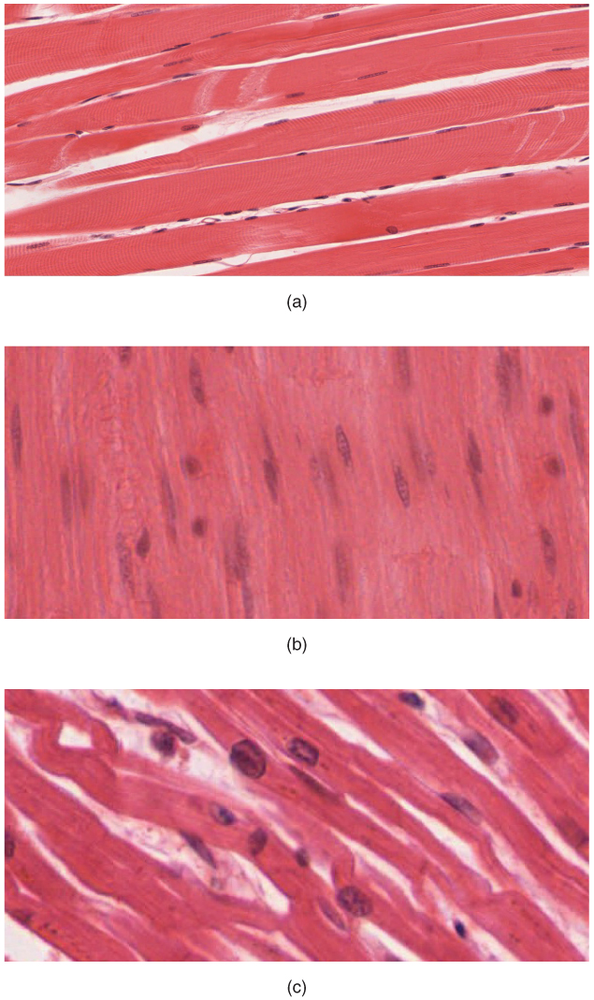
The muscles all begin the actual process of contracting (shortening) when a protein called actin is pulled by a protein called myosin. This occurs in striated muscle (skeletal and cardiac) after specific binding sites on the actin have been exposed in response to the interaction between calcium ions (Ca++) and proteins (troponin and tropomyosin) that “shield” the actin-binding sites. Ca++also is required for the contraction of smooth muscle, although its role is different: here Ca++activates enzymes, which in turn activate myosin heads. All muscles require adenosine triphosphate (ATP) to continue the process of contracting, and they all relax when the Ca++is removed and the actin-binding sites are re-shielded.
A muscle can return to its original length when relaxed due to a quality of muscle tissue calledelasticity. It can recoil back to its original length due to elastic fibers. Muscle tissue also has the quality ofextensibility; it can stretch or extend.Contractilityallows muscle tissue to pull on its attachment points and shorten with force.
Differences among the three muscle types include the microscopic organization of their contractile proteins—actin and myosin. The actin and myosin proteins are arranged very regularly in the cytoplasm of individual muscle cells (referred to as fibers) in both skeletal muscle and cardiac muscle, which creates a pattern, or stripes, called striations. The striations are visible with a light microscope under high magnification (see Figure \(\PageIndex{1}\) ).Skeletal musclefibers are multinucleated structures that compose the skeletal muscle.Cardiac musclefibers each have one to two nuclei and are physically and electrically connected to each other so that the entire heart contracts as one unit (called a syncytium).
Because the actin and myosin are not arranged in such regular fashion insmooth muscle, the cytoplasm of a smooth muscle fiber (which has only a single nucleus) has a uniform, nonstriated appearance (resulting in the name smooth muscle). However, the less organized appearance of smooth muscle should not be interpreted as less efficient. Smooth muscle in the walls of arteries is a critical component that regulates blood pressure necessary to push blood through the circulatory system; and smooth muscle in the skin, visceral organs, and internal passageways is essential for moving all materials through the body.
📖 OpenStax Anatomy & Physiology 2e, Section 10.2. openstax.org · CC BY 4.0
- Describe the layers of connective tissues packaging skeletal muscle
- Explain how muscles work with tendons to move the body
- Identify areas of the skeletal muscle fibers
- Describe excitation-contraction coupling
The best-known feature of skeletal muscle is its ability to contract and cause movement. Skeletal muscles act not only to produce movement but also to stop movement, such as resisting gravity to maintain posture. Small, constant adjustments of the skeletal muscles are needed to hold a body upright or balanced in any position. Muscles also prevent excess movement of the bones and joints, maintaining skeletal stability and preventing skeletal structure damage or deformation. Joints can become misaligned or dislocated entirely by pulling on the associated bones; muscles work to keep joints stable. Skeletal muscles are located throughout the body at the openings of internal tracts to control the movement of various substances. These muscles allow functions, such as swallowing, urination, and defecation, to be under voluntary control. Skeletal muscles also protect internal organs (particularly abdominal and pelvic organs) by acting as an external barrier or shield to external trauma and by supporting the weight of the organs.
Skeletal muscles contribute to the maintenance of homeostasis in the body by generating heat. Muscle contraction requires energy, and when ATP is broken down, heat is produced. This heat is very noticeable during exercise, when sustained muscle movement causes body temperature to rise, and in cases of extreme cold, when shivering produces random skeletal muscle contractions to generate heat.
Each skeletal muscle is an organ that consists of various integrated tissues. These tissues include the skeletal muscle fibers, blood vessels, nerve fibers, and connective tissue. Each skeletal muscle has three layers of connective tissue (called “mysia”) that enclose it and provide structure to the muscle as a whole, and also compartmentalize the muscle fibers within the muscle (Figure \(\PageIndex{1}\) ). Each muscle is wrapped in a sheath of dense, irregular connective tissue called theepimysium, which allows a muscle to contract and move powerfully while maintaining its structural integrity. The epimysium also separates muscle from other tissues and organs in the area, allowing the muscle to move independently.
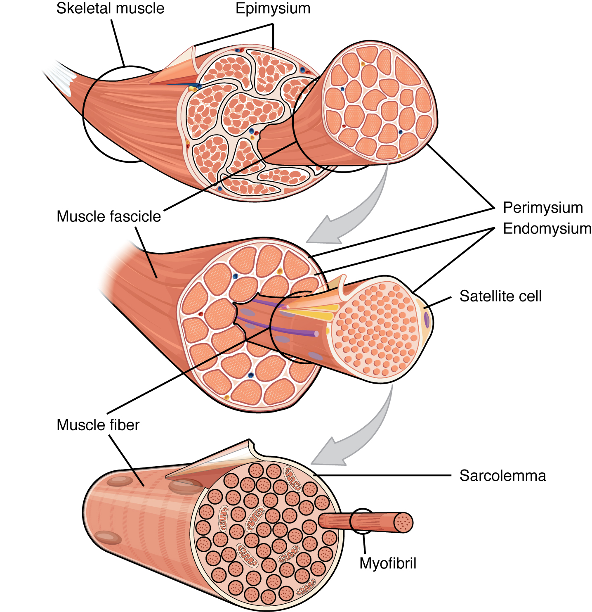
Inside each skeletal muscle, muscle fibers are organized into individual bundles, each called afascicle, by a middle layer of connective tissue called theperimysium. This fascicular organization is common in muscles of the limbs; it allows the nervous system to trigger a specific movement of a muscle by activating a subset of muscle fibers within a bundle, or fascicle of the muscle. Inside each fascicle, each muscle fiber is encased in a thin connective tissue layer of collagen and reticular fibers called theendomysium. The endomysium contains the extracellular fluid and nutrients to support the muscle fiber. These nutrients are supplied via blood to the muscle tissue.
In skeletal muscles that work with tendons to pull on bones, the collagen in the three tissue layers (the mysia) intertwines with the collagen of a tendon. At the other end of the tendon, it fuses with the periosteum coating the bone. The tension created by contraction of the muscle fibers is then transferred though the mysia, to the tendon, and then to the periosteum to pull on the bone for movement of the skeleton. In other places, the mysia may fuse with a broad, tendon-like sheet called anaponeurosis, or to fascia, the connective tissue between skin and bones. The broad sheet of connective tissue in the lower back that the latissimus dorsi muscles (the “lats”) fuse into is an example of an aponeurosis.
Every skeletal muscle is also richly supplied by blood vessels for nourishment, oxygen delivery, and waste removal. In addition, every muscle fiber in a skeletal muscle is supplied by the axon branch of a somatic motor neuron, which signals the fiber to contract. Unlike cardiac and smooth muscle, the only way to functionally contract a skeletal muscle is through signaling from the nervous system.
Because skeletal muscle cells are long and cylindrical, they are commonly referred to as muscle fibers. Skeletal muscle fibers can be quite large for human cells, with diameters up to 100μm and lengths up to 30 cm (11.8 in) in the Sartorius of the upper leg. During early development, embryonic myoblasts, each with its own nucleus, fuse with up to hundreds of other myoblasts to form the multinucleated skeletal muscle fibers. Multiple nuclei mean multiple copies of genes, permitting the production of the large amounts of proteins and enzymes needed for muscle contraction.
Some other terminology associated with muscle fibers is rooted in the Greeksarco, which means “flesh.” The plasma membrane of muscle fibers is called thesarcolemma, the cytoplasm is referred to assarcoplasm, and the specialized smooth endoplasmic reticulum, which stores, releases, and retrieves calcium ions (Ca++) is called thesarcoplasmic reticulum (SR)(Figure \(\PageIndex{2}\) ). As will soon be described, the functional unit of a skeletal muscle fiber is the sarcomere, a highly organized arrangement of the contractile myofilamentsactin(thin filament) andmyosin(thick filament), along with other support proteins.

The striated appearance of skeletal muscle fibers is due to the arrangement of the myofilaments of actin and myosin in sequential order from one end of the muscle fiber to the other. Each packet of these microfilaments and their regulatory proteins,troponinandtropomyosin(along with other proteins) is called asarcomere.
Watch thisvideoto learn more about macro- and microstructures of skeletal muscles. (a) What are the names of the “junction points” between sarcomeres? (b) What are the names of the “subunits” within the myofibrils that run the length of skeletal muscle fibers? (c) What is the “double strand of pearls” described in the video? (d) What gives a skeletal muscle fiber its striated appearance?
The sarcomere is the functional unit of the muscle fiber. The sarcomere itself is bundled within the myofibril that runs the entire length of the muscle fiber and attaches to the sarcolemma at its end. As myofibrils contract, the entire muscle cell contracts. Because myofibrils are only approximately 1.2μm in diameter, hundreds to thousands (each with thousands of sarcomeres) can be found inside one muscle fiber. Each sarcomere is approximately 2μm in length with a three-dimensional cylinder-like arrangement and is bordered by structures called Z-discs (also called Z-lines, because pictures are two-dimensional), to which the actin myofilaments are anchored (Figure \(\PageIndex{3}\) ). Because the actin and its troponin-tropomyosin complex (projecting from the Z-discs toward the center of the sarcomere) form strands that are thinner than the myosin, it is called thethin filamentof the sarcomere. Likewise, because the myosin strands and their multiple heads (projecting from the center of the sarcomere, toward but not all to way to, the Z-discs) have more mass and are thicker, they are called thethick filamentof the sarcomere.
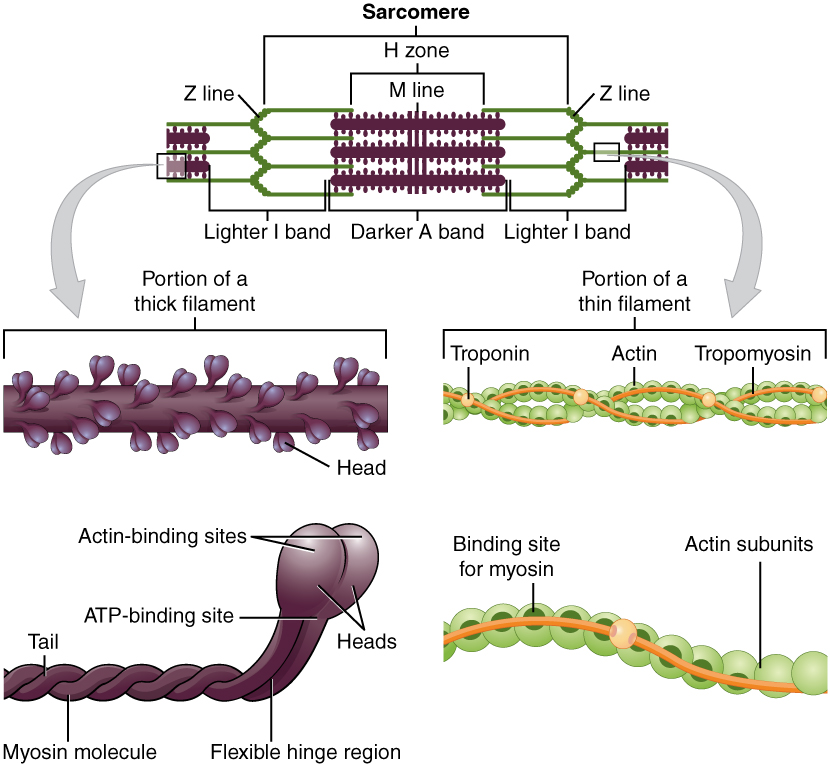
Another specialization of the skeletal muscle is the site where a motor neuron’s terminal meets the muscle fiber—called theneuromuscular junction (NMJ). This is where the muscle fiber first responds to signaling by the motor neuron. Every skeletal muscle fiber in every skeletal muscle is innervated by a motor neuron at the NMJ. Excitation signals from the neuron are the only way to functionally activate the fiber to contract.
Every skeletal muscle fiber is supplied by a motor neuron at the NMJ. (a) What is the definition of a motor unit? (b) What is the structural and functional difference between a large motor unit and a small motor unit? (c) Can you give an example of each? (d) Why is the neurotransmitter acetylcholine degraded after binding to its receptor?
All living cells have membrane potentials, or electrical gradients across their membranes. The inside of the membrane is usually around -60 to -90 mV, relative to the outside. This is referred to as a cell’s membrane potential. Neurons and muscle cells can use their membrane potentials to generate electrical signals. They do this by controlling the movement of charged particles, called ions, across their membranes to create electrical currents. This is achieved by opening and closing specialized proteins in the membrane called ion channels. Although the currents generated by ions moving through these channel proteins are very small, they form the basis of both neural signaling and muscle contraction.
Both neurons and skeletal muscle cells are electrically excitable, meaning that they are able to generate action potentials. An action potential is a special type of electrical signal that can travel along a cell membrane as a wave. This allows a signal to be transmitted quickly and faithfully over long distances.
Although the termexcitation-contraction couplingconfuses or scares some students, it comes down to this: for a skeletal muscle fiber to contract, its membrane must first be “excited”—in other words, it must be stimulated to fire an action potential. The muscle fiber action potential, which sweeps along the sarcolemma as a wave, is “coupled” to the actual contraction through the release of calcium ions (Ca++) from the SR. Once released, the Ca++interacts with the shielding proteins, forcing them to move aside so that the actin-binding sites are available for attachment by myosin heads. The myosin then pulls the actin filaments toward the center, shortening the muscle fiber.
In skeletal muscle, this sequence begins with signals from the somatic motor division of the nervous system. In other words, the “excitation” step in skeletal muscles is always triggered by signaling from the nervous system (Figure \(\PageIndex{4}\) ).
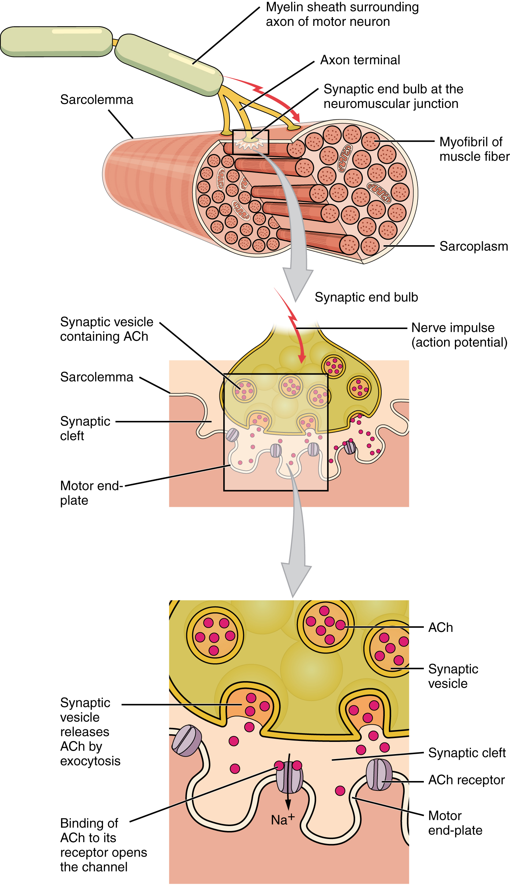
The motor neurons that tell the skeletal muscle fibers to contract originate in the spinal cord, with a smaller number located in the brainstem for activation of skeletal muscles of the face, head, and neck. These neurons have long processes, called axons, which are specialized to transmit action potentials long distances— in this case, all the way from the spinal cord to the muscle itself (which may be up to three feet away). The axons of multiple neurons bundle together to form nerves, like wires bundled together in a cable.
Signaling begins when a neuronalaction potentialtravels along the axon of a motor neuron, and then along the individual branches to terminate at the NMJ. At the NMJ, the axon terminal releases a chemical messenger, orneurotransmitter, calledacetylcholine (ACh). The ACh molecules diffuse across a minute space called thesynaptic cleftand bind to ACh receptors located within themotor end-plateof the sarcolemma on the other side of the synapse. Once ACh binds, a channel in the ACh receptor opens and positively charged ions can pass through into the muscle fiber, causing it todepolarize, meaning that the membrane potential of the muscle fiber becomes less negative (closer to zero.)
As the membrane depolarizes, another set of ion channels calledvoltage-gated sodium channelsare triggered to open. Sodium ions enter the muscle fiber, and an action potential rapidly spreads (or “fires”) along the entire membrane to initiate excitation-contraction coupling.
Things happen very quickly in the world of excitable membranes (just think about how quickly you can snap your fingers as soon as you decide to do it). Immediately following depolarization of the membrane, it repolarizes, re-establishing the negative membrane potential. Meanwhile, the ACh in the synaptic cleft is degraded by the enzyme acetylcholinesterase (AChE) so that the ACh cannot rebind to a receptor and reopen its channel, which would cause unwanted extended muscle excitation and contraction.
Propagation of an action potential along the sarcolemma is the excitation portion of excitation-contraction coupling. Recall that this excitation actually triggers the release of calcium ions (Ca++) from its storage in the cell’s SR. For the action potential to reach the membrane of the SR, there are periodic invaginations in the sarcolemma, calledT-tubules(“T” stands for “transverse”). You will recall that the diameter of a muscle fiber can be up to 100μm, so these T-tubules ensure that the membrane can get close to the SR in the sarcoplasm. The arrangement of a T-tubule with the membranes of SR on either side is called atriad(Figure \(\PageIndex{5}\) ). The triad surrounds the cylindrical structure called amyofibril, which contains actin and myosin.
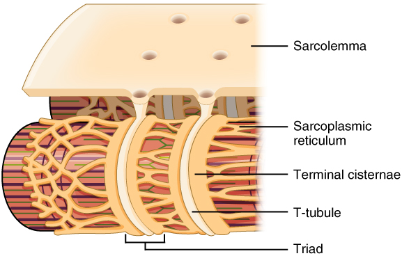
The T-tubules carry the action potential into the interior of the cell, which triggers the opening of calcium channels in the membrane of the adjacent SR, causing Ca++to diffuse out of the SR and into the sarcoplasm. It is the arrival of Ca++in the sarcoplasm that initiates contraction of the muscle fiber by its contractile units, or sarcomeres.
📖 OpenStax Anatomy & Physiology 2e, Section 10.3. openstax.org · CC BY 4.0
- Describe the components involved in a muscle contraction
- Explain how muscles contract and relax
- Describe the sliding filament model of muscle contraction
The sequence of events that result in the contraction of an individual muscle fiber begins with a signal—the neurotransmitter, ACh—from the motor neuron innervating that fiber. The local membrane of the fiber will depolarize as positively charged sodium ions (Na+) enter, triggering an action potential that spreads to the rest of the membrane which will depolarize, including the T-tubules. This triggers the release of calcium ions (Ca++) from storage in the sarcoplasmic reticulum (SR). The Ca++then initiates contraction, which is sustained by ATP (Figure \(\PageIndex{1}\) ). As long as Ca++ions remain in the sarcoplasm to bind to troponin, which keeps the actin-binding sites “unshielded,” and as long as ATP is available to drive the cross-bridge cycling and the pulling of actin strands by myosin, the muscle fiber will continue to shorten to an anatomical limit.
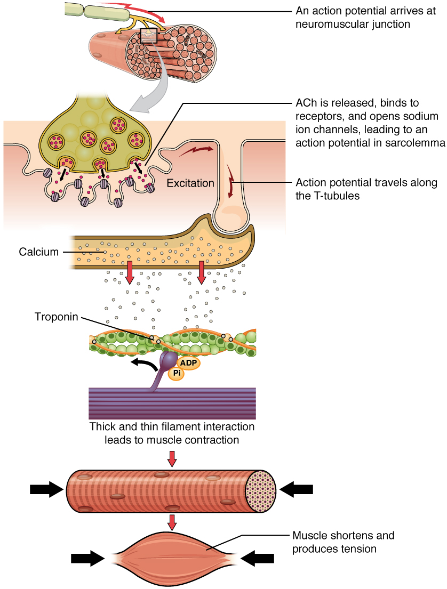
Muscle contraction usually stops when signaling from the motor neuron ends, which repolarizes the sarcolemma and T-tubules, and closes the voltage-gated calcium channels in the SR. Ca++ions are then pumped back into the SR, which causes the tropomyosin to reshield (or re-cover) the binding sites on the actin strands. A muscle also can stop contracting when it runs out of ATP and becomes fatigued (Figure \(\PageIndex{2}\) ).
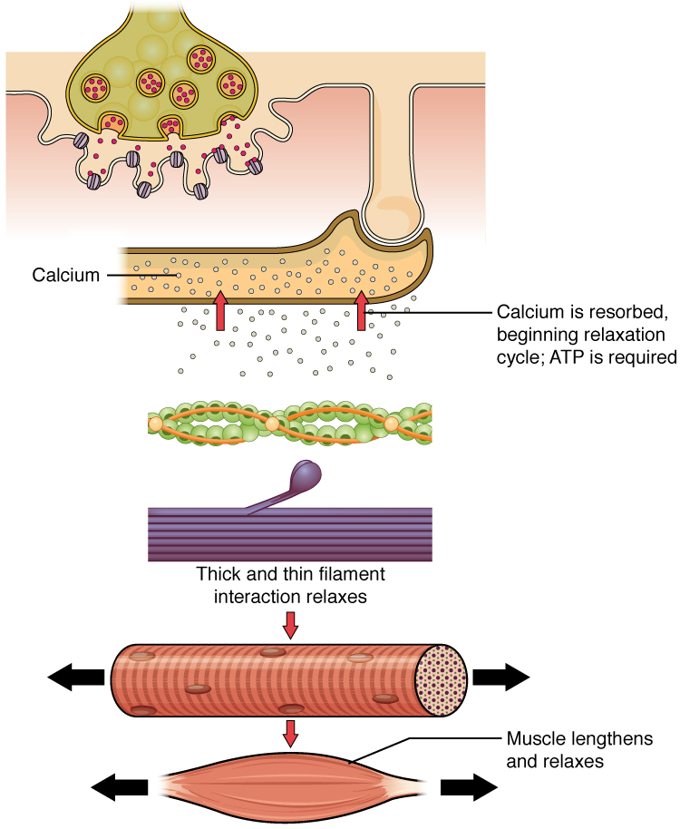
The release of calcium ions initiates muscle contractions. Watch this video to learn more about the role of calcium. (a) What are “T-tubules” and what is their role? (b) Please describe how actin-binding sites are made available for cross-bridging with myosin heads during contraction.
The molecular events of muscle fiber shortening occur within the fiber’s sarcomeres (see Figure 10.10). The contraction of a striated muscle fiber occurs as the sarcomeres, linearly arranged within myofibrils, shorten as myosin heads pull on the actin filaments.
The region where thick and thin filaments overlap has a dense appearance, as there is little space between the filaments. This zone where thin and thick filaments overlap is very important to muscle contraction, as it is the site where filament movement starts. Thin filaments, anchored at their ends by the Z-discs, do not extend completely into the central region that only contains thick filaments, anchored at their bases at a spot called the M-line. A myofibril is composed of many sarcomeres running along its length; thus, myofibrils and muscle cells contract as the sarcomeres contract.
When signaled by a motor neuron, a skeletal muscle fiber contracts as the thin filaments are pulled and then slide past the thick filaments within the fiber’s sarcomeres. This process is known as the sliding filament model of muscle contraction (Figure \(\PageIndex{3}\)). The sliding can only occur when myosin-binding sites on the actin filaments are exposed by a series of steps that begins with Ca++entry into the sarcoplasm.
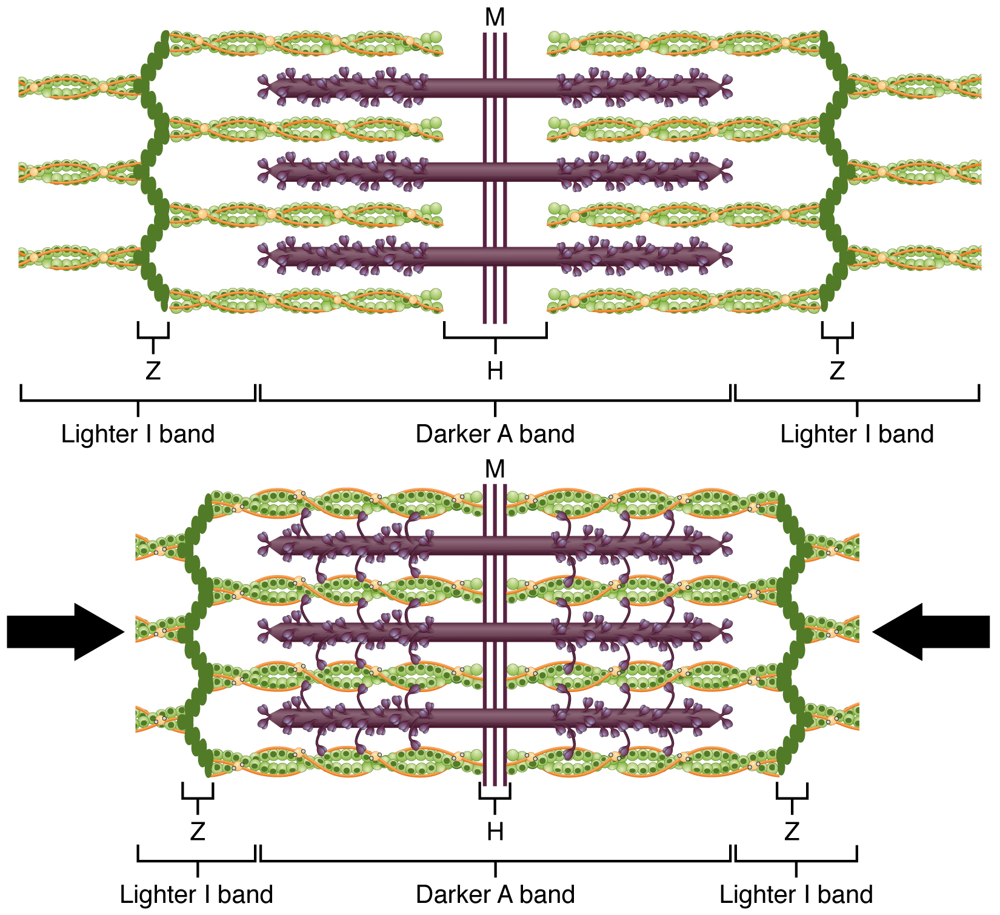
Tropomyosin is a protein that winds around the chains of the actin filament and covers the myosin-binding sites to prevent actin from binding to myosin. Tropomyosin binds to troponin to form a troponin-tropomyosin complex. The troponin-tropomyosin complex prevents the myosin “heads” from binding to the active sites on the actin microfilaments. Troponin also has a binding site for Ca++ions.
To initiate muscle contraction, tropomyosin has to expose the myosin-binding site on an actin filament to allow cross-bridge formation between the actin and myosin microfilaments. The first step in the process of contraction is for Ca++to bind to troponin so that tropomyosin can slide away from the binding sites on the actin strands. This allows the myosin heads to bind to these exposed binding sites and form cross-bridges. The thin filaments are then pulled by the myosin heads to slide past the thick filaments toward the center of the sarcomere. But each head can only pull a very short distance before it has reached its limit and must be “re-cocked” before it can pull again, a step that requires ATP.
For thin filaments to continue to slide past thick filaments during muscle contraction, myosin heads must pull the actin at the binding sites, detach, re-cock, attach to more binding sites, pull, detach, re-cock, etc. This repeated movement is known as the cross-bridge cycle. This motion of the myosin heads is similar to the oars when an individual rows a boat: The paddle of the oars (the myosin heads) pull, are lifted from the water (detach), repositioned (re-cocked) and then immersed again to pull (Figure \(\PageIndex{4}\) ). Each cycle requires energy, and the action of the myosin heads in the sarcomeres repetitively pulling on the thin filaments also requires energy, which is provided by ATP.
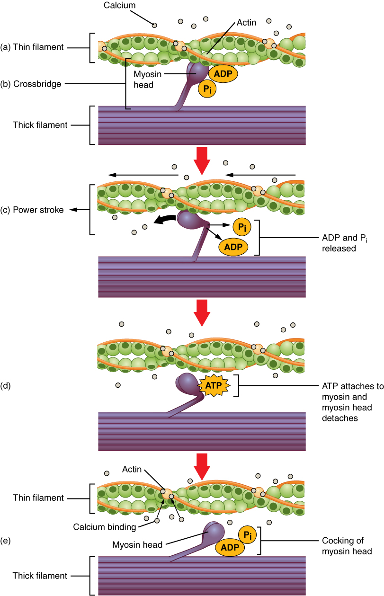
Cross-bridge formation occurs when the myosin head attaches to the actin while adenosine diphosphate (ADP) and inorganic phosphate (Pi) are still bound to myosin (Figure \(\PageIndex{4}\)a,b). Piis then released, causing myosin to form a stronger attachment to the actin, after which the myosin head moves toward the M-line, pulling the actin along with it. As actin is pulled, the filaments move approximately 10 nm toward the M-line. This movement is called thepower stroke, as movement of the thin filament occurs at this step (Figure \(\PageIndex{4}\)c). In the absence of ATP, the myosin head will not detach from actin.
One part of the myosin head attaches to the binding site on the actin, but the head has another binding site for ATP. ATP binding causes the myosin head to detach from the actin (Figure \(\PageIndex{4}\)d). After this occurs, ATP is converted to ADP and Piby the intrinsicATPaseactivity of myosin. The energy released during ATP hydrolysis changes the angle of the myosin head into a cocked position (Figure 10.11e). The myosin head is now in position for further movement.
When the myosin head is cocked, myosin is in a high-energy configuration. This energy is expended as the myosin head moves through the power stroke, and at the end of the power stroke, the myosin head is in a low-energy position. After the power stroke, ADP is released; however, the formed cross-bridge is still in place, and actin and myosin are bound together. As long as ATP is available, it readily attaches to myosin, the cross-bridge cycle can recur, and muscle contraction can continue.
Note that each thick filament of roughly 300 myosin molecules has multiple myosin heads, and many cross-bridges form and break continuously during muscle contraction. Multiply this by all of the sarcomeres in one myofibril, all the myofibrils in one muscle fiber, and all of the muscle fibers in one skeletal muscle, and you can understand why so much energy (ATP) is needed to keep skeletal muscles working. In fact, it is the loss of ATP that results in the rigor mortis observed soon after someone dies. With no further ATP production possible, there is no ATP available for myosin heads to detach from the actin-binding sites, so the cross-bridges stay in place, causing the rigidity in the skeletal muscles.
ATP supplies the energy for muscle contraction to take place. In addition to its direct role in the cross-bridge cycle, ATP also provides the energy for the active-transport Ca++pumps in the SR. Muscle contraction does not occur without sufficient amounts of ATP. The amount of ATP stored in muscle is very low, only sufficient to power a few seconds worth of contractions. As it is broken down, ATP must therefore be regenerated and replaced quickly to allow for sustained contraction. There are three mechanisms by which ATP can be regenerated in muscle cells: creatine phosphate metabolism, anaerobic glycolysis, and aerobic respiration.
Creatine phosphateis a molecule that can store energy in its phosphate bonds. In a resting muscle, excess ATP transfers its energy to creatine, producing ADP and creatine phosphate. This acts as an energy reserve that can be used to quickly create more ATP. When the muscle starts to contract and needs energy, creatine phosphate transfers its phosphate back to ADP to form ATP and creatine. This reaction is catalyzed by the enzyme creatine kinase and occurs very quickly; thus, creatine phosphate-derived ATP powers the first few seconds of muscle contraction. However, creatine phosphate can only provide approximately 15 seconds worth of energy, at which point another energy source has to be used (Figure \(\PageIndex{5}\)).
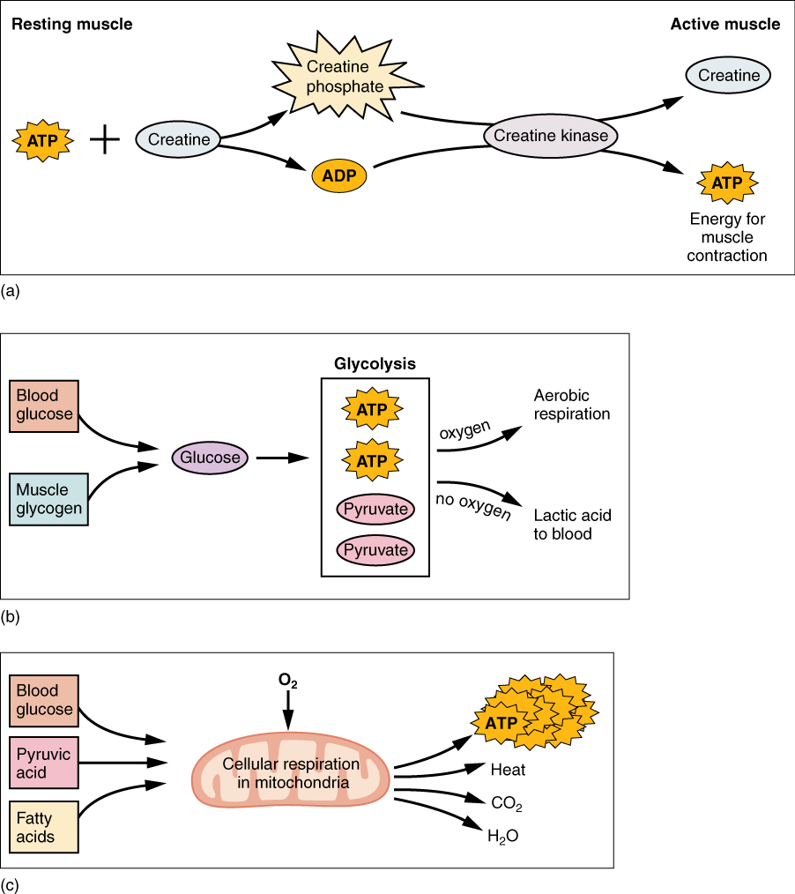
As the ATP produced by creatine phosphate is depleted, muscles turn to glycolysis as an ATP source.Glycolysisis an anaerobic (non-oxygen-dependent) process that breaks down glucose (sugar) to produce ATP; however, glycolysis cannot generate ATP as quickly as creatine phosphate. Thus, the switch to glycolysis results in a slower rate of ATP availability to the muscle. The sugar used in glycolysis can be provided by blood glucose or by metabolizing glycogen that is stored in the muscle. The breakdown of one glucose molecule produces two ATP and two molecules ofpyruvic acid, which can be used in aerobic respiration or when oxygen levels are low, converted to lactic acid (Figure \(\PageIndex{5}\)b).
If oxygen is available, pyruvic acid is used in aerobic respiration. However, if oxygen is not available, pyruvic acid is converted tolactic acid, which may contribute to muscle fatigue. This conversion allows the recycling of the enzyme NAD+from NADH, which is needed for glycolysis to continue. This occurs during strenuous exercise when high amounts of energy are needed but oxygen cannot be sufficiently delivered to muscle. Glycolysis itself cannot be sustained for very long (approximately 1 minute of muscle activity), but it is useful in facilitating short bursts of high-intensity output. This is because glycolysis does not utilize glucose very efficiently, producing a net gain of two ATPs per molecule of glucose, and the end product of lactic acid, which may contribute to muscle fatigue as it accumulates.
Aerobic respirationis the breakdown of glucose or other nutrients in the presence of oxygen (O2) to produce carbon dioxide, water, and ATP. Approximately 95 percent of the ATP required for resting or moderately active muscles is provided by aerobic respiration, which takes place in mitochondria. The inputs for aerobic respiration include glucose circulating in the bloodstream, pyruvic acid, and fatty acids. Aerobic respiration is much more efficient than anaerobic glycolysis, producing approximately 36 ATPs per molecule of glucose versus four from glycolysis. However, aerobic respiration cannot be sustained without a steady supply of O2to the skeletal muscle and is much slower (Figure \(\PageIndex{5}\)c). To compensate, muscles store small amount of excess oxygen in proteins call myoglobin, allowing for more efficient muscle contractions and less fatigue. Aerobic training also increases the efficiency of the circulatory system so that O2can be supplied to the muscles for longer periods of time.
Muscle fatigue occurs when a muscle can no longer contract in response to signals from the nervous system. The exact causes of muscle fatigue are not fully known, although certain factors have been correlated with the decreased muscle contraction that occurs during fatigue. ATP is needed for normal muscle contraction, and as ATP reserves are reduced, muscle function may decline. This may be more of a factor in brief, intense muscle output rather than sustained, lower intensity efforts. Lactic acid buildup may lower intracellular pH, affecting enzyme and protein activity. Imbalances in Na+and K+levels as a result of membrane depolarization may disrupt Ca++flow out of the SR. Long periods of sustained exercise may damage the SR and the sarcolemma, resulting in impaired Ca++regulation.
Intense muscle activity results in anoxygen debt, which is the amount of oxygen needed to compensate for ATP produced without oxygen during muscle contraction. Oxygen is required to restore ATP and creatine phosphate levels, convert lactic acid to pyruvic acid, and, in the liver, to convert lactic acid into glucose or glycogen. Other systems used during exercise also require oxygen, and all of these combined processes result in the increased breathing rate that occurs after exercise. Until the oxygen debt has been met, oxygen intake is elevated, even after exercise has stopped.
Relaxing skeletal muscle fibers, and ultimately, the skeletal muscle, begins with the motor neuron, which stops releasing its chemical signal, ACh, into the synapse at the NMJ. The muscle fiber will repolarize, which closes the gates in the SR where Ca++was being released. ATP-driven pumps will move Ca++out of the sarcoplasm back into the SR. This results in the “reshielding” of the actin-binding sites on the thin filaments. Without the ability to form cross-bridges between the thin and thick filaments, the muscle fiber loses its tension and relaxes.
The number of skeletal muscle fibers in a given muscle is genetically determined and does not change. Muscle strength is directly related to the amount of myofibrils and sarcomeres within each fiber. Factors, such as hormones and stress (and artificial anabolic steroids), acting on the muscle can increase the production of sarcomeres and myofibrils within the muscle fibers, a change called hypertrophy, which results in the increased mass and bulk in a skeletal muscle. Likewise, decreased use of a skeletal muscle results in atrophy, where the number of sarcomeres and myofibrils disappear (but not the number of muscle fibers). It is common for a limb in a cast to show atrophied muscles when the cast is removed, and certain diseases, such as polio, show atrophied muscles.
Duchenne muscular dystrophy (DMD) is a progressive weakening of the skeletal muscles. It is one of several diseases collectively referred to as “muscular dystrophy.” DMD is caused by a lack of the protein dystrophin, which helps the thin filaments of myofibrils bind to the sarcolemma. Without sufficient dystrophin, muscle contractions cause the sarcolemma to tear, causing an influx of Ca++, leading to cellular damage and muscle fiber degradation. Over time, as muscle damage accumulates, muscle mass is lost, and greater functional impairments develop.
DMD is an inherited disorder caused by an abnormal X chromosome. It primarily affects males, and it is usually diagnosed in early childhood. DMD usually first appears as difficulty with balance and motion, and then progresses to an inability to walk. It continues progressing upward in the body from the lower extremities to the upper body, where it affects the muscles responsible for breathing and circulation. It ultimately causes death due to respiratory failure, and those afflicted do not usually live past their 20s.
Because DMD is caused by a mutation in the gene that codes for dystrophin, it was thought that introducing healthy myoblasts into patients might be an effective treatment. Myoblasts are the embryonic cells responsible for muscle development, and ideally, they would carry healthy genes that could produce the dystrophin needed for normal muscle contraction. This approach has been largely unsuccessful in humans. A recent approach has involved attempting to boost the muscle’s production of utrophin, a protein similar to dystrophin that may be able to assume the role of dystrophin and prevent cellular damage from occurring.
📖 OpenStax Anatomy & Physiology 2e, Section 10.4. openstax.org · CC BY 4.0
- Explain concentric, isotonic, and eccentric contractions
- Describe the length-tension relationship
- Describe the three phases of a muscle twitch
- Define wave summation, tetanus, and treppe
To move an object, referred to as load, the sarcomeres in the muscle fibers of the skeletal muscle must shorten. The force generated by the contraction of the muscle (or shortening of the sarcomeres) is calledmuscle tension. However, muscle tension also is generated when the muscle is contracting against a load that does not move, resulting in two main types of skeletal muscle contractions: isotonic contractions and isometric contractions.
Inisotonic contractions, where the tension in the muscle stays constant, a load is moved as the length of the muscle changes (shortens). There are two types of isotonic contractions: concentric and eccentric. Aconcentric contractioninvolves the muscle shortening to move a load. An example of this is the biceps brachii muscle contracting when a hand weight is brought upward with increasing muscle tension. As the biceps brachii contract, the angle of the elbow joint decreases as the forearm is brought toward the body. Here, the biceps brachii contracts as sarcomeres in its muscle fibers are shortening and cross-bridges form; the myosin heads pull the actin. Aneccentric contractionoccurs as the muscle tension diminishes and the muscle lengthens. In this case, the hand weight is lowered in a slow and controlled manner as the amount of cross-bridges being activated by nervous system stimulation decreases. In this case, as tension is released from the biceps brachii, the angle of the elbow joint increases. Eccentric contractions are also used for movement and balance of the body.
Anisometric contractionoccurs as the muscle produces tension without changing the angle of a skeletal joint. Isometric contractions involve sarcomere shortening and increasing muscle tension, but do not move a load, as the force produced cannot overcome the resistance provided by the load. For example, if one attempts to lift a hand weight that is too heavy, there will be sarcomere activation and shortening to a point, and ever-increasing muscle tension, but no change in the angle of the elbow joint. In everyday living, isometric contractions are active in maintaining posture and maintaining bone and joint stability. However, holding your head in an upright position occurs not because the muscles cannot move the head, but because the goal is to remain stationary and not produce movement. Most actions of the body are the result of a combination of isotonic and isometric contractions working together to produce a wide range of outcomes (Figure \(\PageIndex{1}\) ).
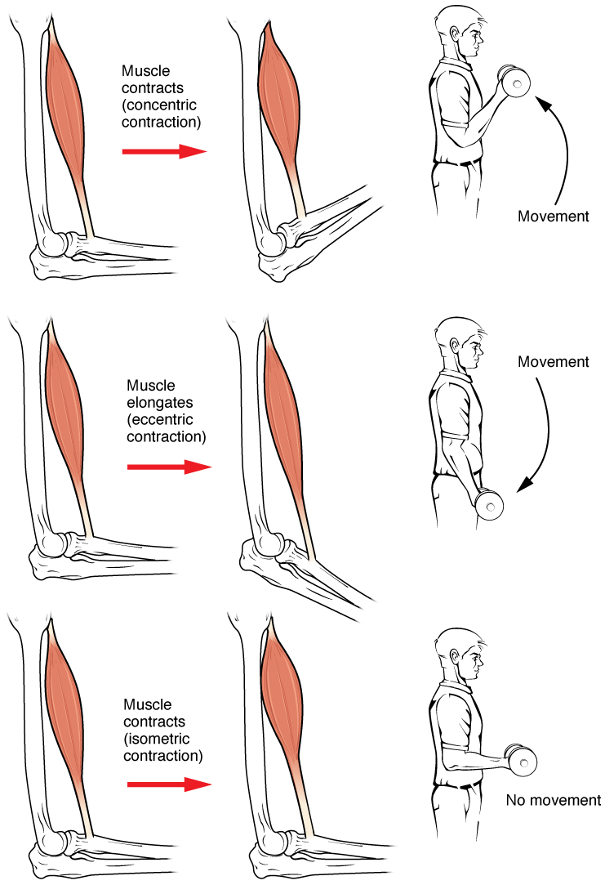
All of these muscle activities are under the exquisite control of the nervous system. Neural control regulates concentric, eccentric and isometric contractions, muscle fiber recruitment, and muscle tone. A crucial aspect of nervous system control of skeletal muscles is the role of motor units.
As you have learned, every skeletal muscle fiber must be innervated by the axon terminal of a motor neuron in order to contract. Each muscle fiber is innervated by only one motor neuron. The actual group of muscle fibers in a muscle innervated by a single motor neuron is called amotor unit. The size of a motor unit is variable depending on the nature of the muscle.
A small motor unit is an arrangement where a single motor neuron supplies a small number of muscle fibers in a muscle. Small motor units permit very fine motor control of the muscle. The best example in humans is the small motor units of the extraocular eye muscles that move the eyeballs. There are thousands of muscle fibers in each muscle, but every six or so fibers are supplied by a single motor neuron, as the axons branch to form synaptic connections at their individual NMJs. This allows for exquisite control of eye movements so that both eyes can quickly focus on the same object. Small motor units are also involved in the many fine movements of the fingers and thumb of the hand for grasping, texting, etc.
A large motor unit is an arrangement where a single motor neuron supplies a large number of muscle fibers in a muscle. Large motor units are concerned with simple, or “gross,” movements, such as powerfully extending the knee joint. The best example is the large motor units of the thigh muscles or back muscles, where a single motor neuron will supply thousands of muscle fibers in a muscle, as its axon splits into thousands of branches.
There is a wide range of motor units within many skeletal muscles, which gives the nervous system a wide range of control over the muscle. The small motor units in the muscle will have smaller, lower-threshold motor neurons that are more excitable, firing first to their skeletal muscle fibers, which also tend to be the smallest. Activation of these smaller motor units, results in a relatively small degree of contractile strength (tension) generated in the muscle. As more strength is needed, larger motor units, with bigger, higher-threshold motor neurons are enlisted to activate larger muscle fibers. This increasing activation of motor units produces an increase in muscle contraction known asrecruitment. As more motor units are recruited, the muscle contraction grows progressively stronger. In some muscles, the largest motor units may generate a contractile force of 50 times more than the smallest motor units in the muscle. This allows a feather to be picked up using the biceps brachii arm muscle with minimal force, and a heavy weight to be lifted by the same muscle by recruiting the largest motor units.
When necessary, the maximal number of motor units in a muscle can be recruited simultaneously, producing the maximum force of contraction for that muscle, but this cannot last for very long because of the energy requirements to sustain the contraction. To prevent complete muscle fatigue, motor units are generally not all simultaneously active, but instead some motor units rest while others are active, which allows for longer muscle contractions. The nervous system uses recruitment as a mechanism to efficiently utilize a skeletal muscle.
When a skeletal muscle fiber contracts, myosin heads attach to actin to form cross-bridges followed by the thin filaments sliding over the thick filaments as the heads pull the actin, and this results in sarcomere shortening, creating the tension of the muscle contraction. The cross-bridges can only form where thin and thick filaments already overlap, so that the length of the sarcomere has a direct influence on the force generated when the sarcomere shortens. This is called the length-tension relationship.
The ideal length of a sarcomere to produce maximal tension occurs at 80 percent to 120 percent of its resting length, with 100 percent being the state where the medial edges of the thin filaments are just at the most-medial myosin heads of the thick filaments (Figure \(\PageIndex{2}\) ). This length maximizes the overlap of actin-binding sites and myosin heads. If a sarcomere is stretched past this ideal length (beyond 120 percent), thick and thin filaments do not overlap sufficiently, which results in less tension produced. If a sarcomere is shortened beyond 80 percent, the zone of overlap is reduced with the thin filaments jutting beyond the last of the myosin heads and shrinks the H zone, which is normally composed of myosin tails. Eventually, there is nowhere else for the thin filaments to go and the amount of tension is diminished. If the muscle is stretched to the point where thick and thin filaments do not overlap at all, no cross-bridges can be formed, and no tension is produced in that sarcomere. This amount of stretching does not usually occur, as accessory proteins and connective tissue oppose extreme stretching.
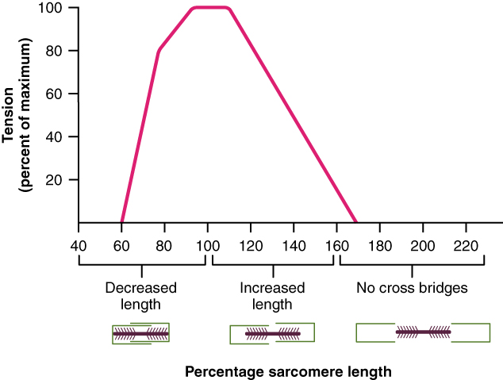
A single action potential from a motor neuron will produce a single contraction in the muscle fibers of its motor unit. This isolated contraction is called atwitch. A twitch can last for a few milliseconds or 100 milliseconds, depending on the muscle type. The tension produced by a single twitch can be measured by amyogram, an instrument that measures the amount of tension produced over time (Figure \(\PageIndex{3}\)). Each twitch undergoes three phases. The first phase is thelatent period, during which the action potential is being propagated along the sarcolemma and Ca++ions are released from the SR. This is the phase during which excitation and contraction are being coupled but contraction has yet to occur. Thecontraction phaseoccurs next. The Ca++ions in the sarcoplasm have bound to troponin, tropomyosin has shifted away from actin-binding sites, cross-bridges have formed, and sarcomeres are actively shortening to the point of peak tension. The last phase is therelaxation phase, when tension decreases as contraction stops. Ca++ions are pumped out of the sarcoplasm into the SR, and cross-bridge cycling stops, returning the muscle fibers to their resting state.

Although a person can experience a muscle “twitch,” a single twitch does not produce any significant muscle activity in a living body. A series of action potentials to the muscle fibers is necessary to produce a muscle contraction that can produce work. Normal muscle contraction is more sustained, and it can be modified by input from the nervous system to produce varying amounts of force; this is called agraded muscle response. The frequency of action potentials (nerve impulses) from a motor neuron and the number of motor neurons transmitting action potentials both affect the tension produced in skeletal muscle.
The rate at which a motor neuron fires action potentials affects the tension produced in the skeletal muscle. If the fibers are stimulated while a previous twitch is still occurring, the second twitch will be stronger. This response is calledwave summation, because the excitation-contraction coupling effects of successive motor neuron signaling is summed, or added together (Figure \(\PageIndex{4}\)a). At the molecular level, summation occurs because the second stimulus triggers the release of more Ca++ions, which become available to activate additional sarcomeres while the muscle is still contracting from the first stimulus. Summation results in greater contraction of the motor unit.

If the frequency of motor neuron signaling increases, summation and subsequent muscle tension in the motor unit continues to rise until it reaches a peak point. The tension at this point is about three to four times greater than the tension of a single twitch, a state referred to as incomplete tetanus. During incomplete tetanus, the muscle goes through quick cycles of contraction with a short relaxation phase for each. If the stimulus frequency is so high that the relaxation phase disappears completely, contractions become continuous in a process called completetetanus(Figure \(\PageIndex{4}\)b).
During tetanus, the concentration of Ca++ions in the sarcoplasm allows virtually all of the sarcomeres to form cross-bridges and shorten, so that a contraction can continue uninterrupted (until the muscle fatigues and can no longer produce tension).
When a skeletal muscle has been dormant for an extended period and then activated to contract, with all other things being equal, the initial contractions generate about one-half the force of later contractions. The muscle tension increases in a graded manner that to some looks like a set of stairs. This tension increase is calledtreppe, a condition where muscle contractions become more efficient. It’s also known as the “staircase effect” (Figure \(\PageIndex{5}\)).
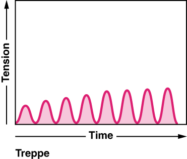
It is believed that treppe results from a higher concentration of Ca++in the sarcoplasm resulting from the steady stream of signals from the motor neuron. It can only be maintained with adequate ATP.
Skeletal muscles are rarely completely relaxed, or flaccid. Even if a muscle is not producing movement, it is contracted a small amount to maintain its contractile proteins and producemuscle tone. The tension produced by muscle tone allows muscles to continually stabilize joints and maintain posture.
Muscle tone is accomplished by a complex interaction between the nervous system and skeletal muscles that results in the activation of a few motor units at a time, most likely in a cyclical manner. In this manner, muscles never fatigue completely, as some motor units can recover while others are active.
The absence of the low-level contractions that lead to muscle tone is referred to ashypotonia, and can result from damage to parts of the central nervous system (CNS), such as the cerebellum, or from loss of innervations to a skeletal muscle, as in poliomyelitis. Hypotonic muscles have a flaccid appearance and display functional impairments, such as weak reflexes. Conversely, excessive muscle tone is referred to ashypertonia, accompanied by hyperreflexia (excessive reflex responses), often the result of damage to upper motor neurons in the CNS. Hypertonia can present with muscle rigidity (as seen in Parkinson’s disease) or spasticity, a phasic change in muscle tone, where a limb will “snap” back from passive stretching (as seen in some strokes).
📖 OpenStax Anatomy & Physiology 2e, Section 10.5. openstax.org · CC BY 4.0
- Describe the types of skeletal muscle fibers
- Explain fast and slow muscle fibers
Two criteria to consider when classifying the types of muscle fibers are how fast some fibers contract relative to others, and how fibers produce ATP. Using these criteria, there are three main types of skeletal muscle fibers.Slow oxidative (SO)fibers contract relatively slowly and use aerobic respiration (oxygen and glucose) to produce ATP.Fast oxidative (FO)fibers have fast contractions and primarily use aerobic respiration, but because they may switch to anaerobic respiration (glycolysis), can fatigue more quickly than SO fibers. Lastly,fast glycolytic (FG)fibers have fast contractions and primarily use anaerobic glycolysis. The FG fibers fatigue more quickly than the others. Most skeletal muscles in a human contain(s) all three types, although in varying proportions.
The speed of contraction is dependent on how quickly myosin’s ATPase hydrolyzes ATP to produce cross-bridge action. Fast fibers hydrolyze ATP approximately twice as quickly as slow fibers, resulting in much quicker cross-bridge cycling (which pulls the thin filaments toward the center of the sarcomeres at a faster rate). The primary metabolic pathway used by a muscle fiber determines whether the fiber is classified as oxidative or glycolytic. If a fiber primarily produces ATP through aerobic pathways it is oxidative. More ATP can be produced during each metabolic cycle, making the fiber more resistant to fatigue. Glycolytic fibers primarily create ATP through anaerobic glycolysis, which produces less ATP per cycle. As a result, glycolytic fibers fatigue at a quicker rate.
The oxidative fibers contain many more mitochondria than the glycolytic fibers, because aerobic metabolism, which uses oxygen (O2) in the metabolic pathway, occurs in the mitochondria. The SO fibers possess a large number of mitochondria and are capable of contracting for longer periods because of the large amount of ATP they can produce, but they have a relatively small diameter and do not produce a large amount of tension. SO fibers are extensively supplied with blood capillaries to supply O2from the red blood cells in the bloodstream. The SO fibers also possess myoglobin, an O2-carrying molecule similar to O2-carrying hemoglobin in the red blood cells. The myoglobin stores some of the needed O2within the fibers themselves (and gives SO fibers their red color). All of these features allow SO fibers to produce large quantities of ATP, which can sustain muscle activity without fatiguing for long periods of time.
The fact that SO fibers can function for long periods without fatiguing makes them useful in maintaining posture, producing isometric contractions, stabilizing bones and joints, and making small movements that happen often but do not require large amounts of energy. They do not produce high tension, and thus they are not used for powerful, fast movements that require high amounts of energy and rapid cross-bridge cycling.
FO fibers are sometimes called intermediate fibers because they possess characteristics that are intermediate between fast fibers and slow fibers. They produce ATP relatively quickly, more quickly than SO fibers, and thus can produce relatively high amounts of tension. They are oxidative because they produce ATP aerobically, possess high amounts of mitochondria, and do not fatigue quickly. However, FO fibers do not possess significant myoglobin, giving them a lighter color than the red SO fibers. FO fibers are used primarily for movements, such as walking, that require more energy than postural control but less energy than an explosive movement, such as sprinting. FO fibers are useful for this type of movement because they produce more tension than SO fibers but they are more fatigue-resistant than FG fibers.
FG fibers primarily use anaerobic glycolysis as their ATP source. They have a large diameter and possess high amounts of glycogen, which is used in glycolysis to generate ATP quickly to produce high levels of tension. Because they do not primarily use aerobic metabolism, they do not possess substantial numbers of mitochondria or significant amounts of myoglobin and therefore have a white color. FG fibers are used to produce rapid, forceful contractions to make quick, powerful movements. These fibers fatigue quickly, permitting them to only be used for short periods. Most muscles possess a mixture of each fiber type. The predominant fiber type in a muscle is determined by the primary function of the muscle.
📖 OpenStax Anatomy & Physiology 2e, Section 10.6. openstax.org · CC BY 4.0
- Describe hypertrophy and atrophy
- Explain how resistance exercise builds muscle
- Explain how performance-enhancing substances affect muscle
Physical training alters the appearance of skeletal muscles and can produce changes in muscle performance. Conversely, a lack of use can result in decreased performance and muscle appearance. Although muscle cells can change in size, new cells are not formed when muscles grow. Instead, structural proteins are added to muscle fibers in a process calledhypertrophy, so cell diameter increases. The reverse, when structural proteins are lost and muscle mass decreases, is calledatrophy. Age-related muscle atrophy is calledsarcopenia. Cellular components of muscles can also undergo changes in response to changes in muscle use.
Slow fibers are predominantly used in endurance exercises that require little force but involve numerous repetitions. The aerobic metabolism used by slow-twitch fibers allows them to maintain contractions over long periods. Endurance training modifies these slow fibers to make them even more efficient by producing more mitochondria to enable more aerobic metabolism and more ATP production. Endurance exercise can also increase the amount of myoglobin in a cell, as increased aerobic respiration increases the need for oxygen. Myoglobin is found in the sarcoplasm and acts as an oxygen storage supply for the mitochondria.
The training can trigger the formation of more extensive capillary networks around the fiber, a process calledangiogenesis, to supply oxygen and remove metabolic waste. To allow these capillary networks to supply the deep portions of the muscle, muscle mass does not greatly increase in order to maintain a smaller area for the diffusion of nutrients and gases. All of these cellular changes result in the ability to sustain low levels of muscle contractions for greater periods without fatiguing.
The proportion of SO muscle fibers in muscle determines the suitability of that muscle for endurance, and may benefit those participating in endurance activities. Postural muscles have a large number of SO fibers and relatively few FO and FG fibers, to keep the back straight (Figure \(\PageIndex{1}\) ). Endurance athletes, like marathon-runners also would benefit from a larger proportion of SO fibers, but it is unclear if the most-successful marathoners are those with naturally high numbers of SO fibers, or whether the most successful marathon runners develop high numbers of SO fibers with repetitive training. Endurance training can result in overuse injuries such as stress fractures and joint and tendon inflammation.
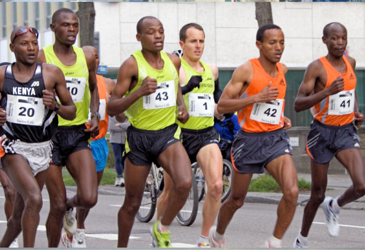
Resistance exercises, as opposed to endurance exercise, require large amounts of FG fibers to produce short, powerful movements that are not repeated over long periods. The high rates of ATP hydrolysis and cross-bridge formation in FG fibers result in powerful muscle contractions. Muscles used for power have a higher ratio of FG to SO/FO fibers, and trained athletes possess even higher levels of FG fibers in their muscles. Resistance exercise affects muscles by increasing the formation of myofibrils, thereby increasing the thickness of muscle fibers. This added structure causes hypertrophy, or the enlargement of muscles, exemplified by the large skeletal muscles seen in body builders and other athletes (Figure \(\PageIndex{2}\)). Because this muscular enlargement is achieved by the addition of structural proteins, athletes trying to build muscle mass often ingest large amounts of protein.
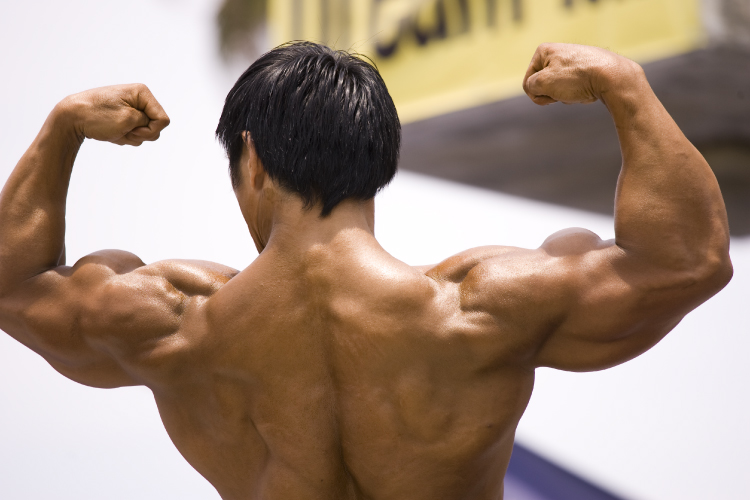
Except for the hypertrophy that follows an increase in the number of sarcomeres and myofibrils in a skeletal muscle, the cellular changes observed during endurance training do not usually occur with resistance training. There is usually no significant increase in mitochondria or capillary density. However, resistance training does increase the development of connective tissue, which adds to the overall mass of the muscle and helps to contain muscles as they produce increasingly powerful contractions. Tendons also become stronger to prevent tendon damage, as the force produced by muscles is transferred to tendons that attach the muscle to bone.
For effective strength training, the intensity of the exercise must continually be increased. For instance, continued weight lifting without increasing the weight of the load does not increase muscle size. To produce ever-greater results, the weights lifted must become increasingly heavier, making it more difficult for muscles to move the load. The muscle then adapts to this heavier load, and an even heavier load must be used if even greater muscle mass is desired.
If done improperly, resistance training can lead to overuse injuries of the muscle, tendon, or bone. These injuries can occur if the load is too heavy or if the muscles are not given sufficient time between workouts to recover or if joints are not aligned properly during the exercises. Cellular damage to muscle fibers that occurs after intense exercise includes damage to the sarcolemma and myofibrils. This muscle damage contributes to the feeling of soreness after strenuous exercise, but muscles gain mass as this damage is repaired, and additional structural proteins are added to replace the damaged ones. Overworking skeletal muscles can also lead to tendon damage and even skeletal damage if the load is too great for the muscles to bear.
Some athletes attempt to boost their performance by using various agents that may enhance muscle performance. Anabolic steroids are one of the more widely known agents used to boost muscle mass and increase power output. Anabolic steroids are a form of testosterone, a male sex hormone that stimulates muscle formation, leading to increased muscle mass.
Endurance athletes may also try to boost the availability of oxygen to muscles to increase aerobic respiration by using substances such as erythropoietin (EPO), a hormone normally produced in the kidneys, which triggers the production of red blood cells. The extra oxygen carried by these blood cells can then be used by muscles for aerobic respiration. Human growth hormone (hGH) is another supplement, and although it can facilitate building muscle mass, its main role is to promote the healing of muscle and other tissues after strenuous exercise. Increased hGH may allow for faster recovery after muscle damage, reducing the rest required after exercise, and allowing for more sustained high-level performance.
Although performance-enhancing substances often do improve performance, most are banned by governing bodies in sports and are illegal for nonmedical purposes. Their use to enhance performance raises ethical issues of cheating because they give users an unfair advantage over nonusers. A greater concern, however, is that their use carries serious health risks. The side effects of these substances are often significant, nonreversible, and in some cases fatal. The physiological strain caused by these substances is often greater than what the body can handle, leading to effects that are unpredictable and dangerous. Anabolic steroid use has been linked to infertility, aggressive behavior, cardiovascular disease, and brain cancer.
Similarly, some athletes have used creatine to increase power output. Creatine phosphate provides quick bursts of ATP to muscles in the initial stages of contraction. Increasing the amount of creatine available to cells is thought to produce more ATP and therefore increase explosive power output, although its effectiveness as a supplement has been questioned.
#### Aging and Muscle Tissue
Although atrophy due to disuse can often be reversed with exercise, muscle atrophy with age, referred to as sarcopenia, is irreversible. This is a primary reason why even highly trained athletes succumb to declining performance with age. This decline is noticeable in athletes whose sports require strength and powerful movements, such as sprinting, whereas the effects of age are less noticeable in endurance athletes such as marathon runners or long-distance cyclists. As muscles age, muscle fibers die, and they are replaced by connective tissue and adipose tissue (Figure \(\PageIndex{3}\) ). Because those tissues cannot contract and generate force as muscle can, muscles lose the ability to produce powerful contractions. The decline in muscle mass causes a loss of strength, including the strength required for posture and mobility. This may be caused by a reduction in FG fibers that hydrolyze ATP quickly to produce short, powerful contractions. Muscles in older people sometimes possess greater numbers of SO fibers, which are responsible for longer contractions and do not produce powerful movements. There may also be a reduction in the size of motor units, resulting in fewer fibers being stimulated and less muscle tension being produced.
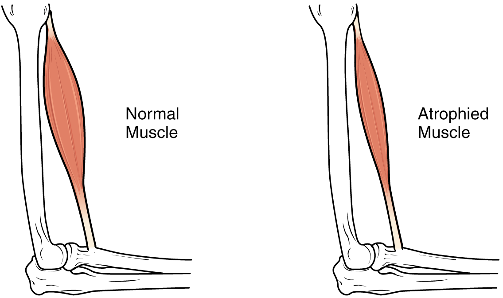
Sarcopenia can be delayed to some extent by exercise, as training adds structural proteins and causes cellular changes that can offset the effects of atrophy. Increased exercise can produce greater numbers of cellular mitochondria, increase capillary density, and increase the mass and strength of connective tissue. The effects of age-related atrophy are especially pronounced in people who are sedentary, as the loss of muscle cells is displayed as functional impairments such as trouble with locomotion, balance, and posture. This can lead to a decrease in quality of life and medical problems, such as joint problems because the muscles that stabilize bones and joints are weakened. Problems with locomotion and balance can also cause various injuries due to falls.
📖 OpenStax Anatomy & Physiology 2e, Section 10.7. openstax.org · CC BY 4.0
- Describe intercalated discs and gap junctions
- Describe a desmosome
Cardiac muscle tissue is only found in the heart. Highly coordinated contractions of cardiac muscle pump blood into the vessels of the circulatory system. Similar to skeletal muscle, cardiac muscle is striated and organized into sarcomeres, possessing the same banding organization as skeletal muscle (Figure \(\PageIndex{1}\) ). However, cardiac muscle fibers are shorter than skeletal muscle fibers and usually contain only one nucleus, which is located in the central region of the cell. Cardiac muscle fibers also possess many mitochondria and myoglobin, as ATP is produced primarily through aerobic metabolism. Cardiac muscle fibers cells also are extensively branched and are connected to one another at their ends by intercalated discs. Anintercalated discallows the cardiac muscle cells to contract in a wave-like pattern so that the heart can work as a pump.
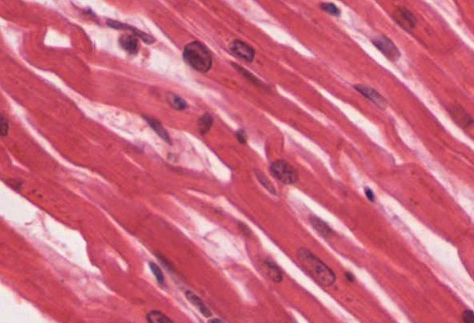
View theUniversity of Michigan WebScopeto explore the tissue sample in greater detail.
Intercalated discs are part of the sarcolemma and contain two structures important in cardiac muscle contraction: gap junctions and desmosomes. A gap junction forms channels between adjacent cardiac muscle fibers that allow the depolarizing current produced by cations to flow from one cardiac muscle cell to the next. This joining is called electric coupling, and in cardiac muscle it allows the quick transmission of action potentials and the coordinated contraction of the entire heart. This network of electrically connected cardiac muscle cells creates a functional unit of contraction called a syncytium. The remainder of the intercalated disc is composed of desmosomes. Adesmosomeis a cell structure that anchors the ends of cardiac muscle fibers together so the cells do not pull apart during the stress of individual fibers contracting (Figure \(\PageIndex{2}\) ).
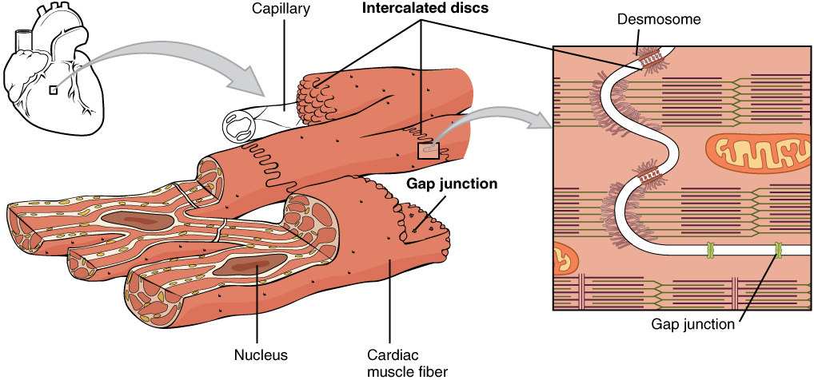
Contractions of the heart (heartbeats) are controlled by specialized cardiac muscle cells called pacemaker cells that directly control heart rate. Although cardiac muscle cannot be consciously controlled, the pacemaker cells respond to signals from the autonomic nervous system (ANS) to speed up or slow down the heart rate. The pacemaker cells can also respond to various hormones that modulate heart rate to control blood pressure.
The wave of contraction that allows the heart to work as a unit, called a functional syncytium, begins with the pacemaker cells. This group of cells is self-excitable and able to depolarize to threshold and fire action potentials on their own, a feature calledautorhythmicity; they do this at set intervals which determine heart rate. Because they are connected with gap junctions to surrounding muscle fibers and the specialized fibers of the heart’s conduction system, the pacemaker cells are able to transfer the depolarization to the other cardiac muscle fibers in a manner that allows the heart to contract in a coordinated manner.
Another feature of cardiac muscle is its relatively long action potentials in its fibers, having a sustained depolarization “plateau.” The plateau is produced by Ca++entry though voltage-gated calcium channels in the sarcolemma of cardiac muscle fibers. This sustained depolarization (and Ca++entry) provides for a longer contraction than is produced by an action potential in skeletal muscle. Unlike skeletal muscle, a large percentage of the Ca++that initiates contraction in cardiac muscles comes from outside the cell rather than from the SR.
📖 OpenStax Anatomy & Physiology 2e, Section 10.8. openstax.org · CC BY 4.0
- Describe a dense body
- Explain how smooth muscle works with internal organs and passageways through the body
- Explain how smooth muscles differ from skeletal and cardiac muscles
- Explain the difference between single-unit and multi-unit smooth muscle
Smooth muscle (so-named because the cells do not have striations) is present in the walls of hollow organs like the urinary bladder, uterus, stomach, intestines, and in the walls of passageways, such as the arteries and veins of the circulatory system, and the tracts of the respiratory, urinary, and reproductive systems (Figure \(\PageIndex{1}\)ab). Smooth muscle is also present in the eyes, where it functions to change the size of the iris and alter the shape of the lens; and in the skin where it causes hair to stand erect in response to cold temperature or fear.
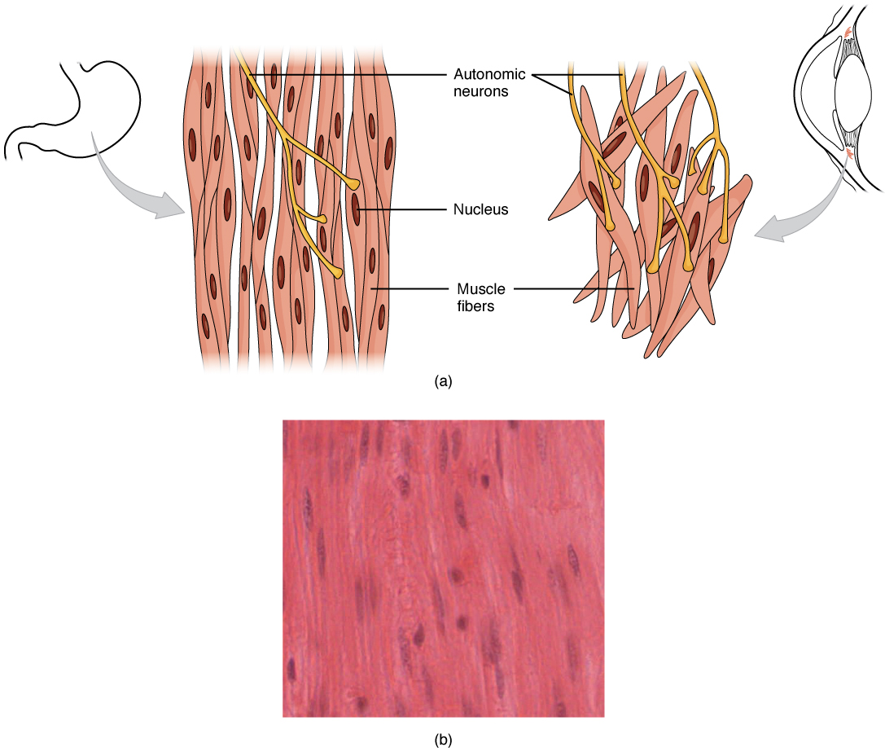
View theUniversity of Michigan WebScopeto explore the tissue sample in greater detail.
Smooth muscle fibers are spindle-shaped (wide in the middle and tapered at both ends, somewhat like a football) and have a single nucleus; they range from about 30 to 200μm (thousands of times shorter than skeletal muscle fibers), and they produce their own connective tissue, endomysium. Although they do not have striations and sarcomeres, smooth muscle fibers do have actin and myosin contractile proteins, and thick and thin filaments. These thin filaments are anchored by dense bodies. Adense bodyis analogous to the Z-discs of skeletal and cardiac muscle fibers and is fastened to the sarcolemma. Calcium ions are supplied by the SR in the fibers and by sequestration from the extracellular fluid through membrane indentations called calveoli.
Because smooth muscle cells do not contain troponin, cross-bridge formation is not regulated by the troponin-tropomyosin complex but instead by the regulatory proteincalmodulin. In a smooth muscle fiber, external Ca++ions passing through opened calcium channels in the sarcolemma, and additional Ca++released from SR, bind to calmodulin. The Ca++-calmodulin complex then activates an enzyme called myosin (light chain) kinase, which, in turn, activates the myosin heads by phosphorylating them (converting ATP to ADP and Pi, with the Piattaching to the head). The heads can then attach to actin-binding sites and pull on the thin filaments. The thin filaments also are anchored to the dense bodies; the structures invested in the inner membrane of the sarcolemma (at adherens junctions) that also have cord-like intermediate filaments attached to them. When the thin filaments slide past the thick filaments, they pull on the dense bodies, structures tethered to the sarcolemma, which then pull on the intermediate filaments networks throughout the sarcoplasm. This arrangement causes the entire muscle fiber to contract in a manner whereby the ends are pulled toward the center, causing the midsection to bulge in a corkscrew motion (Figure \(\PageIndex2}\)).
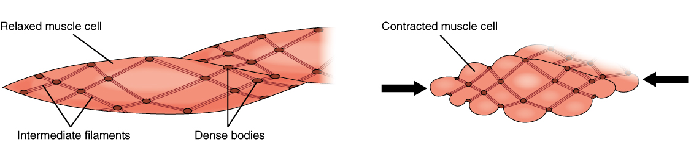
Although smooth muscle contraction relies on the presence of Ca++ions, smooth muscle fibers have a much smaller diameter than skeletal muscle cells. T-tubules are not required to reach the interior of the cell and therefore not necessary to transmit an action potential deep into the fiber. Smooth muscle fibers have a limited calcium-storing SR but have calcium channels in the sarcolemma (similar to cardiac muscle fibers) that open during the action potential along the sarcolemma. The influx of extracellular Ca++ions, which diffuse into the sarcoplasm to reach the calmodulin, accounts for most of the Ca++that triggers contraction of a smooth muscle cell.
Muscle contraction continues until ATP-dependent calcium pumps actively transport Ca++ions back into the SR and out of the cell. However, a low concentration of calcium remains in the sarcoplasm to maintain muscle tone. This remaining calcium keeps the muscle slightly contracted, which is important in certain tracts and around blood vessels.
Because most smooth muscles must function for long periods without rest, their power output is relatively low, but contractions can continue without using large amounts of energy. Some smooth muscle can also maintain contractions even as Ca++is removed and myosin kinase is inactivated/dephosphorylated. This can happen as a subset of cross-bridges between myosin heads and actin, calledlatch-bridges, keep the thick and thin filaments linked together for a prolonged period, and without the need for ATP. This allows for the maintaining of muscle “tone” in smooth muscle that lines arterioles and other visceral organs with very little energy expenditure.
Smooth muscle is not under voluntary control; thus, it is called involuntary muscle. The triggers for smooth muscle contraction include hormones, neural stimulation by the ANS, and local factors. In certain locations, such as the walls of visceral organs, stretching the muscle can trigger its contraction (the stress-relaxation response).
Axons of neurons in the ANS do not form the highly organized NMJs with smooth muscle, as seen between motor neurons and skeletal muscle fibers. Instead, there is a series of neurotransmitter-filled bulges called varicosities as an axon courses through smooth muscle, loosely forming motor units (Figure \(\PageIndex{3}\)). Avaricosityreleases neurotransmitters into the synaptic cleft. Also, visceral muscle in the walls of the hollow organs (except the heart) contains pacesetter cells. Apacesetter cellcan spontaneously trigger action potentials and contractions in the muscle.
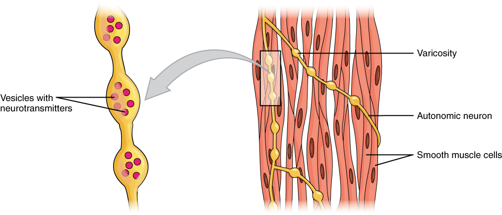
Smooth muscle is organized in two ways: as single-unit smooth muscle, which is much more common; and as multiunit smooth muscle. The two types have different locations in the body and have different characteristics. Single-unit muscle has its muscle fibers joined by gap junctions so that the muscle contracts as a single unit. This type of smooth muscle is found in the walls of all visceral organs except the heart (which has cardiac muscle in its walls), and so it is commonly calledvisceral muscle. Because the muscle fibers are not constrained by the organization and stretchability limits of sarcomeres, visceral smooth muscle has astress-relaxation response. This means that as the muscle of a hollow organ is stretched when it fills, the mechanical stress of the stretching will trigger contraction, but this is immediately followed by relaxation so that the organ does not empty its contents prematurely. This is important for hollow organs, such as the stomach or urinary bladder, which continuously expand as they fill. The smooth muscle around these organs also can maintain a muscle tone when the organ empties and shrinks, a feature that prevents “flabbiness” in the empty organ. In general, visceral smooth muscle produces slow, steady contractions that allow substances, such as food in the digestive tract, to move through the body.
Multiunit smooth muscle cells rarely possess gap junctions, and thus are not electrically coupled. As a result, contraction does not spread from one cell to the next, but is instead confined to the cell that was originally stimulated. Stimuli for multiunit smooth muscles come from autonomic nerves or hormones but not from stretching. This type of tissue is found around large blood vessels, in the respiratory airways, and in the eyes.
Similar to skeletal and cardiac muscle cells, smooth muscle can undergo hypertrophy to increase in size. Unlike other muscle, smooth muscle can also divide to produce more cells, a process calledhyperplasia. This can most evidently be observed in the uterus at puberty, which responds to increased estrogen levels by producing more uterine smooth muscle fibers, and greatly increases the size of the myometrium.
📖 OpenStax Anatomy & Physiology 2e, Section 10.9. openstax.org · CC BY 4.0
- Describe the function of satellite cells
- Define fibrosis
- Explain which muscle has the greatest regeneration ability
Most muscle tissue of the body arises from embryonic mesoderm. Paraxial mesodermal cells adjacent to the neural tube form blocks of cells calledsomites. Skeletal muscles, excluding those of the head and limbs, develop from mesodermal somites, whereas skeletal muscle in the head and limbs develop from general mesoderm. Somites give rise to myoblasts. Amyoblastis a muscle-forming stem cell that migrates to different regions in the body and then fuse(s) to form a syncytium, ormyotube. As a myotube is formed from many different myoblast cells, it contains many nuclei, but has a continuous cytoplasm. This is why skeletal muscle cells are multinucleate, as the nucleus of each contributing myoblast remains intact in the mature skeletal muscle cell. However, cardiac and smooth muscle cells are not multinucleate because the myoblasts that form their cells do not fuse.
Gap junctions develop in the cardiac and single-unit smooth muscle in the early stages of development. In skeletal muscles, ACh receptors are initially present along most of the surface of the myoblasts, but spinal nerve innervation causes the release of growth factors that stimulate the formation of motor end-plates and NMJs. As neurons become active, electrical signals that are sent through the muscle influence the distribution of slow and fast fibers in the muscle.
Although the number of muscle cells is set during development, satellite cells help to repair skeletal muscle cells. Asatellite cellis similar to a myoblast because it is a type of stem cell; however, satellite cells are incorporated into muscle cells and facilitate the protein synthesis required for repair and growth. These cells are located outside the sarcolemma and are stimulated to grow and fuse with muscle cells by growth factors that are released by muscle fibers under certain forms of stress. Satellite cells can regenerate muscle fibers to a very limited extent, but they primarily help to repair damage in living cells. If a cell is damaged to a greater extent than can be repaired by satellite cells, the muscle fibers are replaced by scar tissue in a process calledfibrosis. Because scar tissue cannot contract, muscle that has sustained significant damage loses strength and cannot produce the same amount of power or endurance as it could before being damaged.
Smooth muscle tissue can regenerate from a type of stem cell called apericyte, which is found in some small blood vessels. Pericytes allow smooth muscle cells to regenerate and repair much more readily than skeletal and cardiac muscle tissue. Similar to skeletal muscle tissue, cardiac muscle does not regenerate to a great extent. Dead cardiac muscle tissue is replaced by scar tissue, which cannot contract. As scar tissue accumulates, the heart loses its ability to pump because of the loss of contractile power. However, some minor regeneration may occur due to stem cells found in the blood that occasionally enter cardiac tissue.
As muscle cells die, they are not regenerated but instead are replaced by connective tissue and adipose tissue, which do not possess the contractile abilities of muscle tissue. Muscles atrophy when they are not used, and over time if atrophy is prolonged, muscle cells die. It is therefore important that those who are susceptible to muscle atrophy exercise to maintain muscle function and prevent the complete loss of muscle tissue. In extreme cases, when movement is not possible, electrical stimulation can be introduced to a muscle from an external source. This acts as a substitute for endogenous neural stimulation, stimulating the muscle to contract and preventing the loss of proteins that occurs with a lack of use.
Physiotherapists work with patients to maintain muscles. They are trained to target muscles susceptible to atrophy, and to prescribe and monitor exercises designed to stimulate those muscles. There are various causes of atrophy, including mechanical injury, disease, and age. After breaking a limb or undergoing surgery, muscle use is impaired and can lead to disuse atrophy. If the muscles are not exercised, this atrophy can lead to long-term muscle weakness. A stroke can also cause muscle impairment by interrupting neural stimulation to certain muscles. Without neural inputs, these muscles do not contract and thus begin to lose structural proteins. Exercising these muscles can help to restore muscle function and minimize functional impairments. Age-related muscle loss is also a target of physical therapy, as exercise can reduce the effects of age-related atrophy and improve muscle function.
The goal of a physiotherapist is to improve physical functioning and reduce functional impairments; this is achieved by understanding the cause of muscle impairment and assessing the capabilities of a patient, after which a program to enhance these capabilities is designed. Some factors that are assessed include strength, balance, and endurance, which are continually monitored as exercises are introduced to track improvements in muscle function. Physiotherapists can also instruct patients on the proper use of equipment, such as crutches, and assess whether someone has sufficient strength to use the equipment and when they can function without it.
📖 OpenStax Anatomy & Physiology 2e, Section 10.10. openstax.org · CC BY 4.0
| Section | Title |
|---|---|
| 10.2 | 10.2: Overview of Muscle Tissues |
| 10.3 | 10.3: Skeletal Muscle |
| 10.4 | 10.4: Muscle Fiber Contraction and Relaxation |
| 10.5 | 10.5: Nervous System Control of Muscle Tension |
| 10.6 | 10.6: Types of Muscle Fibers |
| 10.7 | 10.7: Exercise and Muscle Performance |
| 10.8 | 10.8: Cardiac Muscle Tissue |
| 10.9 | 10.9: Smooth Muscle |
| 10.10 | 10.10: Development and Regeneration of Muscle Tissue |